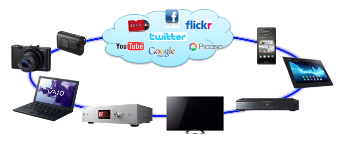
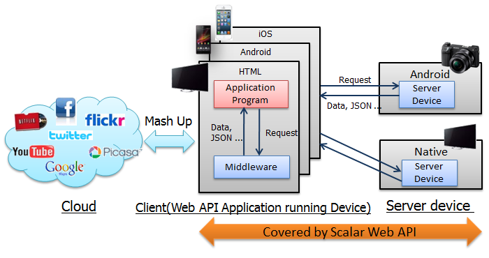
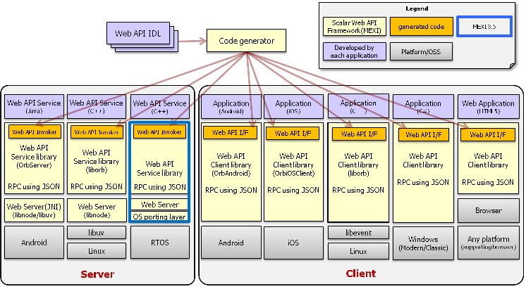

Web API is a protocol spec that provides various services via network. At this moment, HTTP protocol with JSON or XML data format is popular among famous service providers. The application developers can provide their applications on various platforms, since general protocol like HTTP is supported on various operating systems and application development environments.
Recently almost all Sony devices are equipped with network interface.

Some of devices serve Web API service to client application as well. But unfortunately the protocols used are different among Sony devices.
Considering general Web API advantages and current circumstances surrounding Sony network devices, we are motivated to introduce Scalar Web API to improve the items below
Scalar Web API is the Web API that can be made common among the devices that have same or similar functionality (Like tuner, recording and so on). To introduce common Web APIs among Sony devices for efficient and speedy development for business group, we introduce following composition for Scalar Web API.
We call the entire common Software module/Library and the tools for both client and server as "MEXI Framework". Basically you can decide by yourself if you want to use Scalar Web API Framework or not.
MEXI Framework (named "MEXI") is composed of various software modules both for client and server side, to introduce server system into your system, to develop server application on it or to develop client application communicating with the server. Also, "Code generator" constitutes one of the ingredients of MEXI SDK to generate source codes both for client and server side applications using Java Interface description as IDL (Interface Description Language). You can easily implement each individual Web API to be supported on your device or client application.
All the modules are based on Scalar Web API Protocol specification and satisfy the requirements described in that document.

Moreover, we provide testing tools called "Server Testing Tool" and "Virtual Device", which are for client and server application for each.
We define common management process to define new Scalar Web API or for modifying current APIs. Mainly this process is for
We prepare definition guideline. Please refer if you want to define Web API newly.
Please contact us via e-mail for more detail in Scalar Web API Definition and management process.